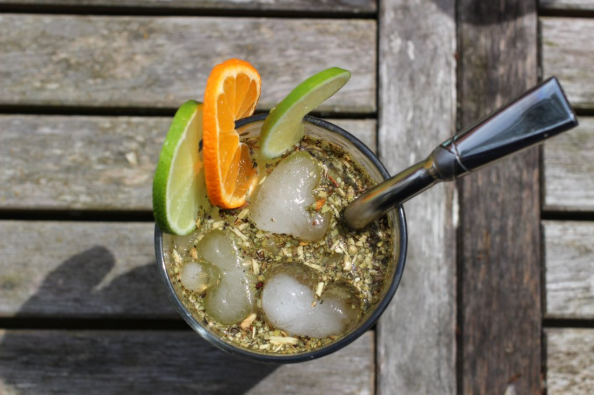

FRESCOS

Con jugo
Paso 1. Pon en una jarra el jugo del sabor que más te guste y hielo. El jugo puede
ser de una fruta o también se preparar un jugo en polvo.
Paso 2. Llena un vaso con yerba mate hasta la mitad. Luego inserta la bombilla y algunos cubitos de hielo.

Con Agua
Si no te es agradable el sabor del jugo con la yerba puedes utilizar solamente agua con hielo.